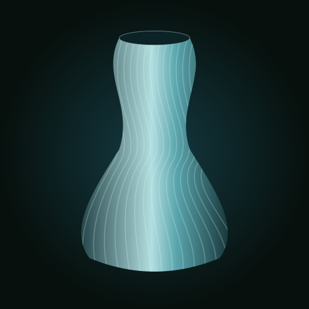

Em breve
Luz com identidade.
Luminárias de autor, impressas em 3D: pétalas, folhas e formas que só a nossa fábrica faz.
Imagens de ambientação e conceito.
QUEM É A VISIOARTE
Criamos peças de design e desenvolvemos nossas próprias máquinas e nosso próprio software. Tudo feito aqui.
Luminárias, móveis e objetos de grande porte, com material reciclado e identidade própria.
Conheça o que é feito por nósFEITO POR NÓS
Desenvolvemos a tecnologia que dá forma às nossas peças. Design, máquinas e software próprios, reunidos na mesma fábrica.
Ver MáquinasDESIGN AUTORAL · FABRICAÇÃO PRÓPRIA
Luminárias, móveis, vasos, decoração, painéis, esculturas, peças para jardins, revestimentos, mobiliário pet, cubas, componentes náuticos e cerâmica. Feitos pela VISIOARTE para fazer parte do seu espaço.
Em breve
Luz com identidade.
Conheça nossa proposta de mobiliário impresso em 3D.
Conhecer móveisVasos e peças decorativas com identidade própria.
Conhecer as possibilidadesPainéis impressos em 3D e em madeira para transformar ambientes.
Conhecer as duas linhasEsculturas e peças autorais em impressão 3D para dialogar com seu espaço.
Explorar arte e esculturasFloreiras, bancos e peças em material cimentício impresso em 3D.
Explorar espaços externosMódulos, relevos e materiais para compor paredes e fachadas.
Explorar revestimentosCamas, tocas e peças em impressão 3D integradas à decoração.
Explorar mobiliário petCurvas suaves e texturas cimentícias para compor seu lavabo.
Explorar cubas e lavabosMoldes, protótipos, consoles e painéis. Desenvolvimento sob medida para explorar novas aplicações no setor náutico.
Conhecer a linhaLouças, recipientes e coleções de mesa. Formas orgânicas e camadas que dão identidade à matéria cerâmica.
Conhecer a linhaNovas peças e coleções serão apresentadas aqui.
Tem uma ideia para o seu espaço?
Fazer um projetoDESIGN AUTORAL · FABRICAÇÃO PRÓPRIA
Formas que fazem parte do seu espaço.
Mobiliário com curvas, texturas e identidade. Na VISIOARTE, criação e fabricação caminham juntas para desenvolver peças a partir da sua ideia e do ambiente.

POSSIBILIDADES DE PROJETO
O uso, as medidas e a presença que você quer dar ao espaço orientam o desenvolvimento. Estes são alguns caminhos para começar uma conversa.
Uma mesa lateral, um apoio ou uma peça central. Proporções e superfícies pensadas em relação ao restante do ambiente.
Propor uma mesaFormas para receber e fazer parte da rotina. O uso pretendido orienta o desenho e a avaliação do projeto.
Propor um assentoUma necessidade específica ou uma referência diferente. Desenvolvemos a proposta considerando o ambiente e as possibilidades de fabricação.
Trazer minha ideiaA MATÉRIA TAMBÉM DESENHA
A impressão 3D constrói a peça em camadas. Essa característica pode participar do acabamento e da identidade do móvel.
Trabalhamos com pellet e plástico reciclado. A escolha do material faz parte do desenvolvimento de cada projeto.
Conhecer os materiais e a reciclagemDO SEU ESPAÇO À NOSSA FÁBRICA
Uma foto, um desenho ou uma necessidade. Conte onde o móvel será usado e quais medidas são importantes.
Avaliamos forma, material, acabamento e possibilidades de fabricação. Prazo e orçamento são combinados caso a caso.
Com o projeto definido, seguimos para a fabricação conforme as condições e o prazo combinados.
ANTES DE COMEÇAR
Sim. Uma referência visual, as medidas disponíveis e a descrição do uso ajudam a avaliar e desenvolver a proposta.
Essa possibilidade depende do material, do desenho e das condições de exposição. Informe se a peça ficará ao ar livre para que isso seja considerado na avaliação.
São definidos caso a caso, considerando a peça e o desenvolvimento necessário. Comece contando sua ideia na área Projetos + contato.
UM MÓVEL, UMA IDEIA SUA
Traga suas referências e conte o que precisa. O primeiro passo é definir a proposta.
VASOS · OBJETOS DECORATIVOS · DESIGN AUTORAL
Formas que dão identidade ao seu espaço.
Vasos, centros de mesa e peças decorativas com curvas, relevos e presença. Na VISIOARTE, a impressão 3D participa do desenho e da superfície de cada criação.

PARA COMPOR, ORGANIZAR E EXPRESSAR
O formato, o tamanho e o uso ajudam a definir o projeto. A textura faz parte dessas escolhas, junto da cor e da relação com o espaço.
Uma peça de destaque ou uma composição de volumes. Explore proporções e superfícies que conversem com o seu ambiente.
Propor um vasoFormas para compor a mesa, reunir objetos ou criar um ponto de interesse. O uso pretendido orienta cada proposta.
Trazer minha ideiaPeças decorativas em que curvas, volumes e luz trabalham juntos. Um caminho para criar algo com identidade própria.
Pensar uma peça autoralDESIGN ENCONTRA NATUREZA
Peças que dialogam entre si e com o ambiente: diferentes alturas, cores e superfícies podem construir uma composição.

A MATÉRIA PARTICIPA DO DESENHO
Trabalhamos com impressão 3D, pellet e plástico reciclado. A forma é construída em camadas, que podem aparecer na superfície e contribuir para a estética da peça.
Material, proporções e acabamento são definidos considerando o uso pretendido e as possibilidades do projeto.
Conhecer a matéria e a reciclagemUma referência, uma medida ou uma necessidade ajudam a começar o desenho.
Relevos e linhas de impressão valorizam a superfície, sem limitar a criação a um único estilo.
Design, software e máquinas fazem parte da mesma fábrica, aproximando a ideia da fabricação.
PARA COMEÇAR SEU PROJETO
Sim. Traga uma foto, um desenho ou uma descrição da sua ideia. Avaliamos as possibilidades para desenvolver uma proposta.
Conte quais medidas e cores você imagina. As opções são avaliadas de acordo com o desenho, o material e a fabricação.
Informe esse uso ao apresentar sua ideia. Ele deve ser considerado na escolha do material, do formato e do acabamento.
São combinados caso a caso, conforme a peça e o desenvolvimento necessário. Comece pela área Projetos + contato.
UMA IDEIA SUA, UM PROJETO COM A GENTE
Conte o que você imagina para o seu espaço e traga suas referências.
IMPRESSÃO 3D + MADEIRA
Texturas, formas e luz para transformar espaços.
Superfícies que ganham profundidade e divisórias que deixam a luz participar. Explore painéis impressos em 3D e em madeira para criar identidade, separar ambientes e compor seu espaço.

DUAS LINHAS, MUITAS POSSIBILIDADES
Impressão 3D e madeira oferecem presenças diferentes. A escolha começa pelo efeito que você quer criar e pelo uso do ambiente.
Ondas, curvas e volumes para dar profundidade à parede. As camadas de impressão podem participar da textura e do desenho da superfície.
Imaginar um painel 3DPainéis e divisórias em madeira, com desenhos que valorizam a matéria e exploram a relação entre cheios, vazios e passagem de luz.
Imaginar um painel em madeiraUma mesma proposta pode explorar a combinação entre madeira e peças impressas em 3D. Proporções, encontros e possibilidades de fabricação são avaliados no desenvolvimento.
Pensar uma composiçãoO AMBIENTE FAZ PARTE DA PEÇA
Recortes projetam sombras. Relevos mudam com a iluminação. Um painel pode transformar uma parede ou criar uma separação visual entre espaços.

PENSADO PARA O SEU ESPAÇO
Conte onde a peça será usada, envie referências e compartilhe as medidas disponíveis. A proposta considera desenho, material, proporções e forma de fixação.
Podemos estudar uma peça de destaque ou uma composição de módulos, conforme as necessidades e as possibilidades de fabricação.
Conversar sobre meu espaçoComposições decorativas para criar um ponto de destaque com textura e profundidade.
Divisórias vazadas para organizar visualmente o ambiente e explorar a passagem de luz.
Desenhos para espaços residenciais ou comerciais, desenvolvidos a partir das referências de cada projeto.
ANTES DE COMEÇAR
Sim. Apresentamos as duas linhas e avaliamos a escolha de acordo com o desenho, o local e o efeito desejado. Uma composição entre materiais também pode ser estudada.
Traga uma foto do ambiente, medidas e referências. A partir delas, avaliamos formas, recortes, relevos e a organização dos módulos.
Informe largura e altura disponíveis, local de uso, fotos do espaço e se a peça será um painel de parede ou uma divisória. Conte também suas preferências de material e acabamento.
Esses pontos são avaliados conforme a superfície, as dimensões e o material escolhido. As condições de instalação e o que está incluído devem ser combinados na proposta.
Informe essas condições desde o início. A adequação do material e do acabamento precisa ser avaliada para o local de uso.
São definidos caso a caso, conforme desenho, dimensões, materiais e desenvolvimento necessário. Comece pela área Projetos + contato.
SEU AMBIENTE, UM NOVO OLHAR
Envie suas referências e vamos estudar um painel ou uma divisória para o seu projeto.
ARTE AUTORAL · IMPRESSÃO 3D
Da ideia à forma.
Da forma à arte.
Curvas, vazios e volumes que convidam a olhar de novo. Explore esculturas e peças autorais em impressão 3D, desenvolvidas para dialogar com o seu espaço.

A FORMA COMO EXPRESSÃO
A relação com a luz, a distância do olhar e o espaço ao redor fazem parte da proposta. Estes são alguns caminhos para desenvolver sua ideia.
Esculturas de apoio ou de chão para compor espaços residenciais e comerciais. Proporções pensadas para dialogar com a arquitetura.
Pensar uma peça para meu espaçoPropostas de maior presença para halls, áreas de convivência e jardins. Dimensões, material, estabilidade e condições de uso são avaliados no projeto.
Explorar uma peça de maior escalaUma referência, um conceito ou um esboço pode iniciar uma peça própria. Exploramos curvas, encontros e vazios para desenvolver uma proposta com identidade.
Trazer minha ideiaLUZ, SOMBRA E MOVIMENTO
O vazio também participa da escultura. Curvas e aberturas criam diferentes leituras conforme a luz e o ponto de vista.

A FABRICAÇÃO FAZ PARTE DA ARTE
A impressão 3D constrói a forma por deposição de material. Suas linhas podem ficar aparentes e participar da textura, destacadas pela luz e pelas curvas da peça.
Trabalhamos com pellet e plástico reciclado. Material, cor e acabamento são definidos de acordo com o desenho e o uso pretendido.
Conhecer a matéria e a reciclagemComeçamos pela ideia, pelo ambiente e pela sensação que a peça deve provocar.
Estudamos o desenho, a escala, os apoios e as possibilidades de fabricação.
Criação, software e máquinas próprios aproximam o desenvolvimento da fabricação.
PARA COMEÇAR
Sim. Traga um esboço, uma foto ou uma descrição do conceito. Avaliamos as possibilidades para desenvolver uma proposta própria para o seu projeto.
Conte as medidas disponíveis e suas preferências. As opções são estudadas conforme o desenho, o material e a fabricação.
Podem ficar, sim. As camadas fazem parte do processo e podem ser valorizadas no desenho. A aparência da superfície é definida durante o desenvolvimento.
Essa aplicação precisa ser informada desde o início. Exposição ao sol e à chuva, material, acabamento, base e fixação devem ser avaliados para o local.
São combinados conforme a escala, o desenvolvimento e o local de destino. As condições de transporte e instalação devem constar na proposta.
UMA IDEIA SUA, UMA FORMA NOVA
Compartilhe suas referências e o espaço que vai receber a peça. Vamos estudar as possibilidades juntos.
IMPRESSÃO 3D EM MATERIAL CIMENTÍCIO
Design que encontra a natureza.
Floreiras, bancos e peças escultóricas que dialogam com a vegetação e a arquitetura. Formas em material cimentício, construídas em camadas para dar uma nova presença aos espaços ao ar livre.

FORMAS PARA VIVER DO LADO DE FORA
Curvas que acompanham caminhos, peças que recebem o verde e lugares que convidam a ficar. Explore possibilidades para varandas, pátios e áreas de convivência.
Volumes orgânicos e composições de floreiras para integrar vegetação e arquitetura. Espaço para raízes, drenagem e dimensões entram no desenvolvimento.
Pensar uma floreiraPeças de mobiliário para organizar áreas de convivência. Desenho, conforto, apoios e condições de uso são avaliados em cada proposta.
Propor um bancoPeças escultóricas para criar um ponto de destaque entre a vegetação. Forma, escala e iluminação podem fazer parte da composição.
Imaginar uma peça para o jardimVEGETAÇÃO, MATÉRIA E LUZ
A textura mineral encontra o verde. Camadas, curvas e sombras ajudam a integrar as peças ao ambiente e aos percursos do jardim.

A MATÉRIA REVELA O PROCESSO
A impressão 3D com material cimentício deposita uma mistura à base de cimento em camadas sucessivas. As linhas podem permanecer aparentes e participar da estética da peça.
A composição do material, a espessura das camadas e o acabamento são definidos conforme a geometria e o uso. Cada proposta considera também as condições do local.
Conversar sobre os materiaisMedidas, circulação, paisagismo e referências orientam as proporções da peça.
Exposição ao tempo, contato com água, drenagem e apoio são considerados no desenvolvimento.
Peso, acesso ao local, transporte e instalação são avaliados antes da definição da proposta.
PARA COMEÇAR SEU PROJETO
A proposta desta linha é a impressão 3D em material cimentício: uma mistura à base de cimento preparada para deposição em camadas. A formulação e o acabamento são definidos conforme cada projeto.
Sim. Envie fotos, referências e as dimensões disponíveis. Avaliamos o desenho e as possibilidades de fabricação para desenvolver a proposta.
A solução depende do uso e do local. Informe se haverá plantio direto, vasos internos ou outro arranjo para que drenagem e proteção contra umidade sejam consideradas no projeto.
Essa condição deve ser informada desde o início. Material, acabamento e detalhes construtivos são avaliados para a exposição prevista, assim como os cuidados de manutenção.
Fotos do espaço, medidas aproximadas, referências e a finalidade da peça. Para locais elevados ou de acesso restrito, informe também essas condições.
São combinados caso a caso, conforme o desenvolvimento, as dimensões, o peso e o local de destino. As condições e os serviços incluídos devem constar na proposta.
SEU JARDIM, NOVAS POSSIBILIDADES
Compartilhe suas referências e conte como você quer viver sua área externa.
RELEVO, RITMO E PROFUNDIDADE
A identidade começa na superfície.
Módulos que transformam paredes e dão expressão à arquitetura. Explore formas em impressão 3D, madeira e material cimentício, com texturas que mudam conforme a luz e o ponto de vista.

UMA SUPERFÍCIE, OUTRA PRESENÇA
Da parede de destaque à composição de uma fachada, a repetição de módulos pode criar movimento, profundidade e uma leitura própria para o espaço.
Revestimentos para halls, recepções e ambientes de convivência. Relevos e proporções pensados para valorizar uma superfície.
Pensar uma parede de destaqueComposições modulares que exploram curvas, ritmo e sombra. Materiais e soluções de aplicação são avaliados conforme a exposição e as condições da edificação.
Explorar uma fachadaMadeira, peças impressas em 3D e superfícies cimentícias podem participar de uma mesma proposta, valorizando contrastes de textura e cor.
Criar uma composiçãoA LUZ DESENHA JUNTO
Ondulações e recuos produzem diferentes sombras. A iluminação pode revelar as linhas de impressão e destacar o movimento dos módulos.

CADA MATÉRIA, UMA EXPRESSÃO
Na impressão 3D, as camadas podem ficar aparentes e compor a superfície. Em material cimentício, a textura mineral acrescenta outra leitura; na madeira, veios, recortes e relevos valorizam a matéria.
A escolha considera o uso interno ou externo, o efeito desejado e as possibilidades de fabricação. Amostras, encontros e acabamento podem ser estudados no desenvolvimento.
Conversar sobre minha ideiaDimensões, juntas e continuidade do desenho são pensadas em conjunto para compor a superfície.
Substrato, exposição, peso e fixação orientam a avaliação da solução de revestimento.
Uma referência, fotos e medidas ajudam a definir proporções, materiais e a relação com a arquitetura.
PARA COMEÇAR
Aqui, o foco são composições que revestem paredes e fachadas, com módulos e texturas integrados à superfície. A linha de painéis e divisórias também explora peças para separar ambientes.
Conhecer Painéis e DivisóriasSim. Envie referências, fotos e medidas. Avaliamos relevos, formato dos módulos, materiais e possibilidades de fabricação para desenvolver uma proposta.
A proposta inclui impressão 3D em polímeros ou material cimentício e composições com madeira. A escolha depende do desenho e das condições de uso da superfície.
Essa aplicação precisa ser avaliada conforme o material, o acabamento e a exposição prevista. Peso, suporte e fixação devem ser definidos para a edificação e o local.
Envie a área aproximada, fotos da superfície, localização e referências. Fabricação, transporte, aplicação e serviços incluídos são combinados na proposta, conforme o desenvolvimento necessário.
SUA ARQUITETURA, UMA NOVA SUPERFÍCIE
Compartilhe o espaço e as referências que você tem em mente.
MOBILIÁRIO PET · IMPRESSÃO 3D
Um lugar para eles.
Design para sua casa.
Tocas, camas e peças que integram o espaço dos animais à decoração. Curvas e texturas em impressão 3D, com possibilidades de composição em madeira, tecido e corda.

TRÊS CAMINHOS PARA COMEÇAR
Uma coleção pensada para unir o uso do pet à linguagem do ambiente. Explore possibilidades para desenvolver uma peça própria.
Formas orgânicas com espaço para almofadas removíveis. Abertura, área interna e altura de acesso são estudadas de acordo com o porte e os hábitos do animal.
Pensar uma cama ou tocaPlataformas, nichos e composições com arranhadores. Peças impressas podem ser combinadas com madeira e corda para criar um conjunto para o espaço disponível.
Imaginar um circuitoBases para receber potes removíveis, com desenho integrado à decoração. Formato, encaixe dos recipientes e altura são definidos na proposta.
Propor um suporteUM MESMO AMBIENTE, MUITOS JEITOS DE VIVER
Cores, volumes e materiais podem dialogar com o mobiliário da casa, criando um lugar para o pet sem perder a identidade do ambiente.

FORMA, MATÉRIA E ROTINA
As linhas da impressão 3D podem ficar aparentes e contribuir para a textura da peça. Madeira, tecidos e cordas podem complementar o desenho conforme a proposta.
O desenvolvimento considera o porte do animal, as dimensões do espaço, o acesso para limpeza e os componentes que precisam ser removidos ou substituídos.
Conversar sobre meu projetoMedidas e hábitos ajudam a definir a abertura, o espaço interno e a posição de uso.
Almofadas, recipientes e superfícies de arranhar são especificados de acordo com cada proposta.
Referências de cor, fotos do ambiente e medidas orientam a composição.
PARA COMEÇAR
Sim. Informe as medidas, o peso e os hábitos do animal, além das dimensões disponíveis no ambiente. Esses dados ajudam a avaliar a proposta.
Podem combinar partes impressas com madeira, tecido, corda ou recipientes removíveis. A composição e os itens incluídos são definidos para cada projeto.
O desenho depende do espaço, da disposição das peças e do uso previsto. Carga, apoios, tipo de parede e fixação precisam ser avaliados no desenvolvimento e na instalação.
Os recipientes compatíveis e sua inclusão são combinados na proposta. O suporte impresso serve como base para potes removíveis, que recebem a comida ou a água.
Escolha de material, acabamento e cuidados de limpeza fazem parte da especificação de cada peça. Informe também se o animal costuma roer ou arranhar os objetos.
Conte qual peça imagina e envie fotos do espaço, medidas, porte do pet e referências. Desenvolvimento, componentes, transporte e instalação são combinados conforme o projeto.
UM PROJETO PARA QUEM VIVE COM VOCÊ
Compartilhe suas referências e conte o que seu pet precisa no dia a dia.
DESIGN EM MATERIAL CIMENTÍCIO
Curvas suaves.
Presença em cada detalhe.
Cubas de apoio com proporções equilibradas, superfícies em camadas e identidade própria. Uma proposta para integrar forma, matéria e arquitetura ao seu lavabo.

A FORMA COMEÇA NA PROPORÇÃO
Curvas delicadas e volumes simples podem dar personalidade à bancada. Explore possibilidades para desenvolver uma proposta para seu espaço.
Desenhos alongados, cantos arredondados e transições fluidas. Proporções pensadas em relação à bancada e ao uso do ambiente.
Imaginar uma cubaAs linhas de impressão podem participar da face externa, enquanto a superfície interna recebe o acabamento definido para o uso com água e a rotina de limpeza.
Explorar forma e texturaA cuba dialoga com a bancada, os metais, a iluminação e os revestimentos. Fotos e referências ajudam a construir uma proposta coerente.
Pensar meu ambienteMATÉRIA, MADEIRA E LUZ
A textura cimentícia encontra a madeira e a luz quente. Um desenho de linhas suaves para compor um lavabo com identidade.

CAMADAS QUE PARTICIPAM DO DESIGN
A impressão 3D em material cimentício permite explorar superfícies construídas em camadas. O relevo externo pode destacar a textura e a relação da peça com a luz.
O desenvolvimento considera contato com água, acabamento interno, escoamento e integração com a bancada e os metais escolhidos.
Conversar sobre meu projetoLargura, profundidade e altura são estudadas em conjunto com o espaço disponível.
Torneira, válvula, saída de água e apoio precisam ser compatibilizados no projeto.
Proteção da superfície e cuidados de limpeza fazem parte da especificação de cada peça.
PARA COMEÇAR
Envie as medidas da bancada, fotos do ambiente e referências de forma. Avaliamos as proporções e as possibilidades de desenvolvimento.
Elas podem ser valorizadas na parte externa. A superfície interna e os demais detalhes recebem o acabamento definido conforme o uso.
A solução considera o material, o acabamento da superfície e a rotina de uso. Proteção, limpeza e manutenção são especificadas no desenvolvimento.
Os componentes e serviços incluídos são combinados na proposta. As imagens apresentam uma ambientação conceitual; informe os metais e a bancada que pretende usar.
Fotos, medidas disponíveis, referências e informações sobre torneira e saída de água ajudam a iniciar a conversa. Orçamento, prazo, transporte e instalação são definidos conforme o projeto.
SEU LAVABO, UM DESENHO PRÓPRIO
Compartilhe suas referências e as medidas do ambiente.
DESENVOLVIMENTO · MOLDES · IMPRESSÃO 3D
Do desenho ao componente.
Moldes, protótipos, consoles e painéis para explorar novas formas no setor náutico. Uma linha de desenvolvimento sob medida, a partir da aplicação e das necessidades de cada projeto.

POSSIBILIDADES DE DESENVOLVIMENTO
Geometria, dimensões e condições de uso orientam o caminho entre a ideia, o modelo e a fabricação.
Modelos e ferramental para explorar geometrias de componentes náuticos. Processo de fabricação, acabamento e requisitos do molde são avaliados em conjunto.
Propor um moldeEstudos de forma e volume para conferir proporções, interfaces e disposição de instrumentos antes da definição da peça.
Desenvolver um protótipoCarcaças, acabamentos e componentes personalizados a partir de desenhos, referências ou uma necessidade específica.
Apresentar minha aplicaçãoDO MODELO DIGITAL AO VOLUME REAL
Um protótipo ajuda a visualizar o conjunto e estudar suas interfaces. Moldes e componentes seguem caminhos definidos conforme o processo e o uso.

PROCESSO DEFINIDO PARA CADA APLICAÇÃO
A impressão 3D de grande formato permite estudar volumes e superfícies a partir de um modelo digital. As linhas de deposição podem permanecer aparentes ou receber o acabamento previsto na proposta.
Material, tolerâncias, montagem e exposição ao ambiente marinho são considerados no desenvolvimento. Um molde, um protótipo e uma peça de uso final têm requisitos diferentes.
Conversar sobre meu projetoDesenhos, medidas e pontos de montagem ajudam a definir a geometria e os encontros com outros componentes.
A proposta pode incluir estudos de volume, modelos ou protótipos para avaliar forma e montagem.
Processo, acabamento, verificações e condições de instalação são combinados conforme o uso da peça.
PARA COMEÇAR
Envie o arquivo disponível, desenhos ou referências. Conte o que a peça deve fazer e em qual conjunto será utilizada para avaliarmos o desenvolvimento.
Sim. Um modelo pode ser estudado para avaliar forma, dimensões e interfaces. O objetivo e o nível de acabamento são definidos na proposta.
O molde participa de outro processo de fabricação; a peça final será utilizada na aplicação prevista. Material, geometria, acabamento e critérios de avaliação são definidos de acordo com essa finalidade.
Informe exposição ao sol, água, temperatura e esforços previstos. Esses requisitos orientam a seleção de material, o processo e as verificações necessárias para a aplicação.
Envie finalidade, desenhos ou referências, medidas e quantidade desejada. Prazo, fabricação, transporte e serviços incluídos são definidos conforme o desenvolvimento necessário.
UMA IDEIA SUA, UM PROJETO COM A GENTE
Compartilhe a aplicação, os desenhos e as referências que você já tem.
FORMA DIGITAL · MATÉRIA CERÂMICA
Texturas para a vida cotidiana.
Louças, recipientes e coleções de mesa com formas orgânicas e camadas que participam do desenho. Explore propostas em argila e porcelana para transformar a relação entre objeto, uso e matéria.

UMA COLEÇÃO, DIFERENTES MOMENTOS
Uma peça de destaque ou um conjunto coordenado. Proporção, textura e acabamento ajudam a construir a identidade de cada coleção.
Pratos, tigelas, xícaras e peças de servir com desenho próprio. Formas e superfícies pensadas em conjunto para compor a mesa.
Imaginar uma coleçãoRecipientes, bandejas e peças de apoio com curvas e proporções que valorizam a matéria cerâmica.
Propor uma peçaPropostas a partir de um conceito, de referências ou de uma composição de cores e texturas. Cada série é estudada conforme a fabricação.
Desenvolver uma sérieCAMADAS, COR E MATÉRIA
A textura externa pode revelar o processo de impressão, enquanto o interior e os demais detalhes recebem o acabamento definido para o uso.

ARGILA, PORCELANA E POSSIBILIDADES
Nesta linha, a proposta é explorar a impressão de massas cerâmicas, como argila ou porcelana. Secagem, queima e acabamento fazem parte do desenvolvimento da peça.
Composição da massa, retração, textura e esmaltação influenciam o resultado. Dimensões finais e acabamento são definidos considerando essas etapas e a finalidade do objeto.
Conversar sobre meu projetoReferências e finalidade orientam volumes, bordas, aberturas e a composição das peças.
As camadas podem participar do desenho. Cor, esmaltação e superfícies de contato são estudadas conforme a proposta.
A especificação de cada peça define sua aplicação e os cuidados de limpeza e manutenção.
PARA COMEÇAR
Esta aba apresenta propostas em matéria cerâmica, como argila e porcelana, com as etapas de secagem e queima correspondentes. Composição e acabamento são definidos no desenvolvimento.
Sim. Traga referências, uma ideia de conjunto e a finalidade das peças. Avaliamos formas, dimensões, quantidade e possibilidades de fabricação.
Podem ficar e fazer parte da textura. Sua aparência depende da massa, da geometria, das camadas e do acabamento escolhido.
Esse uso deve orientar a escolha da massa e do acabamento desde o início. A aplicação em contato com alimentos é definida na especificação de cada peça.
Cuidados de limpeza e condições como micro-ondas, forno ou lava-louças são definidos para cada peça conforme material e acabamento. Essas condições são informadas na especificação.
Envie referências, finalidade, medidas aproximadas e quantidade desejada. Desenvolvimento, amostras, acabamento e prazo são combinados conforme a proposta.
UMA IDEIA SUA, UM PROJETO COM A GENTE
Compartilhe suas referências e conte como as peças farão parte do dia a dia.
DESIGN E TECNOLOGIA PRÓPRIOS
Reunimos criação, desenvolvimento e fabricação para entregar peças com identidade.
Criamos para o uso, para o ambiente e para a presença que a peça terá no espaço.
Máquinas e software desenvolvidos pela VISIOARTE dão forma aos nossos projetos.
O reaproveitamento faz parte das escolhas que colocamos nas nossas peças.
Seu projeto pode começar por uma referência.
Fazer um projetoA MATÉRIA RECOMEÇA
Imprimimos com pellet e plástico reciclado. O que sobra é moído e volta para a produção.
Matéria-prima que ganha forma em peças para o seu ambiente.
O refugo moído volta à produção quando está em condição de uso.
RECICLAGEM NO CENTRO
Escolhemos o material de acordo com a peça e seu uso. Reciclagem e design caminham juntos.
FEITO POR NÓS
Nossas peças nascem no nosso software e saem das nossas máquinas, de grande porte. Tudo feito aqui.
Projetamos nossas máquinas para fabricar as formas que queremos criar.
Aqui, criação e fabricação fazem parte da mesma empresa.
Ver PeçasUm projeto próprio da VISIOARTE para ampliar as possibilidades das nossas peças.
DESENVOLVIMENTO INTERNO
Desenhamos e visualizamos nossas peças em ferramentas desenvolvidas pela VISIOARTE.
Tecnologia usada internamente para transformar uma ideia em projeto.
SOFTWARE DESENVOLVIDO PELA VISIOARTE
Beta gratuito · no navegadorUma ideia. Muitas formas de criar.
Crie vasos com texturas e camadas não planas. Explore a relação entre forma, superfície e camadas em um fatiador desenvolvido pela VISIOARTE.
Acesse a versão web e comece a explorar.

O QUE VOCÊ PODE EXPLORAR
O perfil de um vaso, a textura da superfície e o movimento das camadas contribuem para a identidade de cada peça.
Explore formas para criar vasos com diferentes proporções e presença. O desenho da peça é o ponto de partida.
Crie vasos com textura e explore como o relevo muda a aparência da peça e sua relação com a luz.
Explore camadas que sobem e descem ao longo da peça, criando ondulações que fazem parte do desenho.
DA REFERÊNCIA À EXPLORAÇÃO
Uma ferramenta própria para explorar novas possibilidades na impressão 3D. Comece com uma ideia e descubra como forma, textura e camadas podem trabalhar juntas.
Pense no perfil do vaso, nas proporções e na presença que você quer dar ao objeto.
Experimente a combinação entre forma, textura e camadas não planas no Visio Slicer.
Compare caminhos e refine o desenho que melhor expressa o que você quer criar.
ANTES DE COMEÇAR
É o fatiador web da VISIOARTE, apresentado aqui para a criação de vasos com texturas e camadas não planas.
A versão web está disponível em visioslicer.com.br. Use o botão “Experimentar o Visio Slicer” para abrir o fatiador em outra aba.
São camadas cuja altura varia ao longo do percurso. Em vez de permanecerem em um único plano horizontal, elas podem formar ondas e acompanhar um desenho com movimento.
Sim. O Visio Slicer faz parte do desenvolvimento de tecnologia própria da VISIOARTE, junto das nossas máquinas e peças de design.
COMECE A EXPLORAR
Conheça o beta gratuito do Visio Slicer no navegador.
PROJETOS SOB MEDIDA + CONTATO
Prazo e orçamento combinados caso a caso, conforme a peça e o desenvolvimento necessário.
Conte o que você precisa e traga suas referências.
Definimos forma, material, possibilidades e orçamento.
Produzimos a peça conforme o projeto e o prazo combinados.